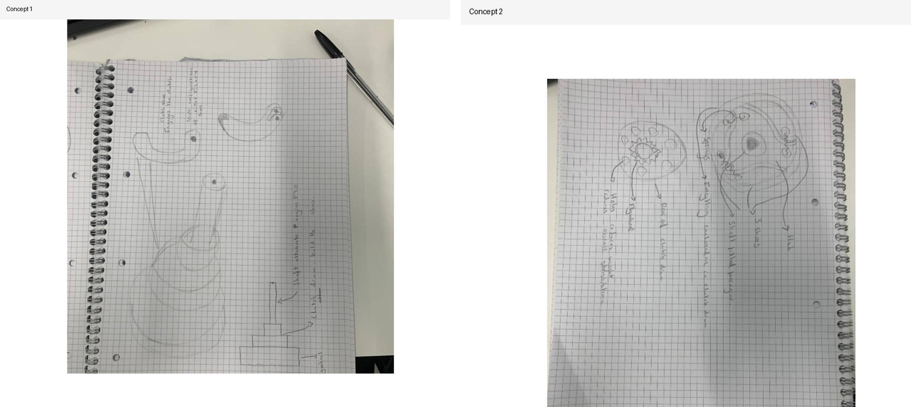
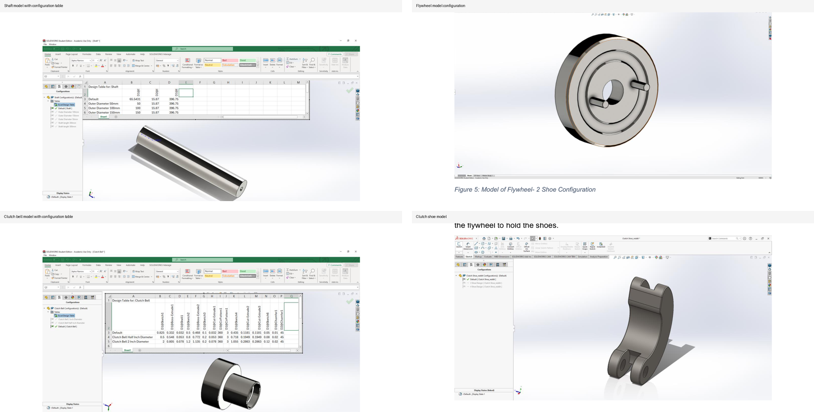
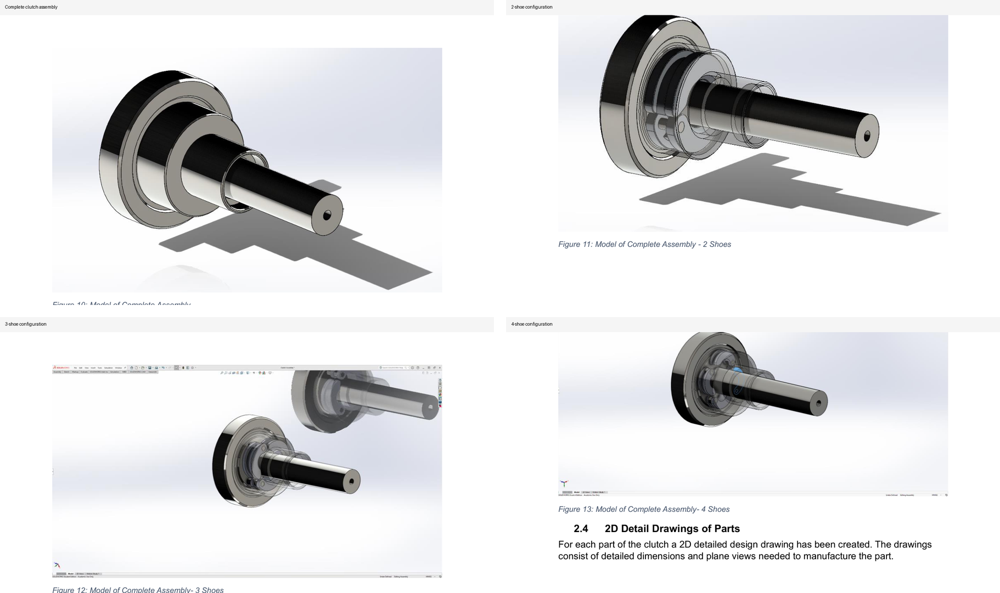
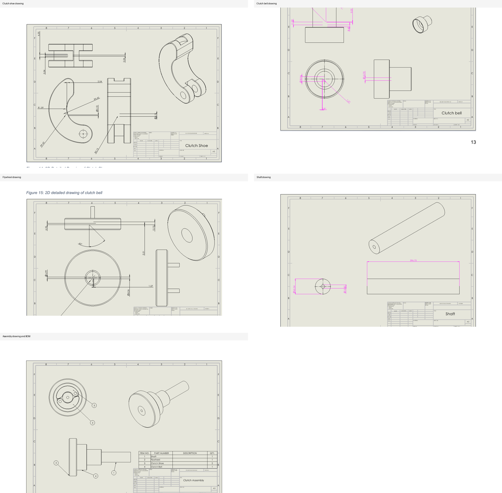
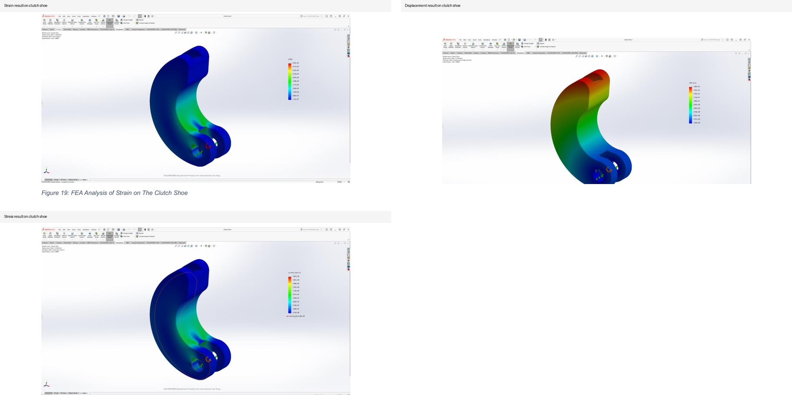
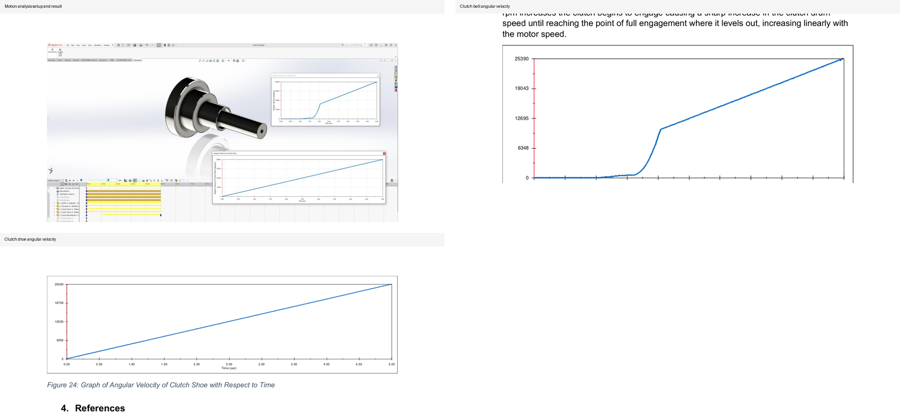

Centrifugal Clutch Design and Motion Analysis
A SolidWorks CAD and simulation project focused on designing a centrifugal clutch assembly for a Honda GX engine application. The work included concept selection, part modelling, assembly configurations, 2D manufacturing drawings, theoretical calculations, FEA on the clutch shoe, and motion analysis of clutch engagement.
Project Overview
The clutch was developed as a CAD and simulation study to investigate how a centrifugal clutch transfers power from an engine shaft to an output clutch bell. The assembly was built from four main components: the shaft, flywheel, clutch bell, and clutch shoe.
Objective
The objective was to create a complete clutch design that could be modelled, detailed, assembled, and tested through simulation. The work aimed to compare different shoe configurations and understand how the clutch bell and shoes respond as motor speed increases.
Interactive 3D Preview
Rotate, zoom, and inspect the simplified 2-shoe clutch configuration directly in the browser.

CAD Modelling Workflow
- Produced initial concept sketches and selected the preferred clutch concept for development.
- Modelled the shaft using Honda GX power take-off shaft dimensions as the design reference.
- Created flywheel configurations to support 2-shoe, 3-shoe, and 4-shoe clutch layouts.
- Modelled the clutch bell as the outer output drum where power transfer is observed.
- Designed the clutch shoe as the key contact component responsible for transferring energy between the flywheel/shaft and clutch bell.
- Assembled the full clutch and generated separate assembly configurations for different shoe counts.


2D Engineering Drawings
Detailed 2D drawings were produced for the clutch shoe, clutch bell, flywheel, shaft, and complete assembly. These drawings included key dimensions, plane views, a bill of materials, and assembly order information to support manufacturability and technical communication.
Engine Reference Values
The clutch design was framed around realistic Honda GX120 engine expectations rather than overstating theoretical clutch capacity. These values provide a practical benchmark for the motion analysis and power transmission discussion.
- Maximum net torque: 7.3 Nm at 2500 rpm
- Net power output: 2.4 kW at 3600 rpm
- Continuous rated power: 1.8 kW at 3000 rpm
- Continuous rated power: 2.1 kW at 3600 rpm

FEA Simulation
The clutch shoe was analysed under maximum load conditions to examine strain, displacement, and stress. The strain and stress results showed higher values near the applied force region, while displacement was greatest further from the applied force due to the influence of distance in the torque response.

Motion Analysis
A motion study was completed on the assembled clutch to evaluate how the clutch shoe and clutch bell engage as motor speed increases. At low RPM, the clutch bell remains idle; as RPM rises, the clutch begins to engage and the clutch bell angular velocity increases sharply before reaching full engagement.
Results and Interpretation
- The clutch shoe rotates immediately with the shaft and flywheel.
- The clutch bell remains stationary at low motor speeds.
- Bell speed increases sharply once engagement begins.
- After full engagement, the clutch bell speed increases approximately linearly with motor speed.
- Simulation results supported the comparison of 2, 3, and 4 shoe configurations.

Skills Demonstrated
- 3D CAD modelling of mechanical power transmission components.
- Assembly configuration management for multiple design variants.
- Creation of 2D engineering drawings for individual parts and assemblies.
- Use of FEA to assess strain, displacement, and stress on a loaded clutch shoe.
- Use of motion analysis to investigate dynamic engagement behaviour.
- Application of theoretical calculations to support simulation work.
Reflection
This project strengthened my ability to connect CAD modelling, engineering drawings, theoretical calculations, FEA, and motion simulation into one design workflow. It showed how a mechanical system can be developed from concept through to assembly and then evaluated using simulation to understand stress behaviour and dynamic engagement performance.